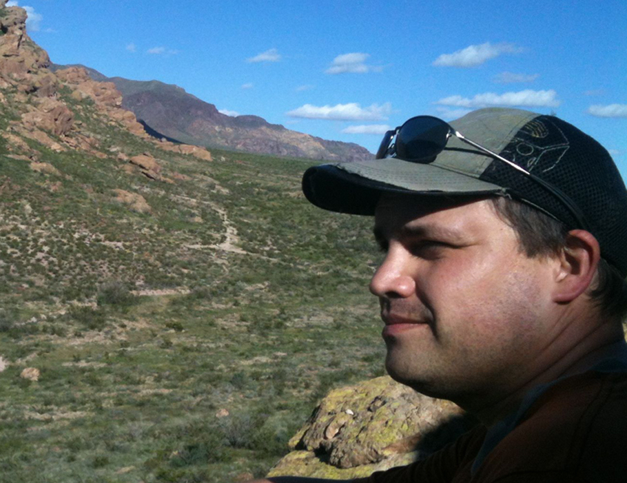
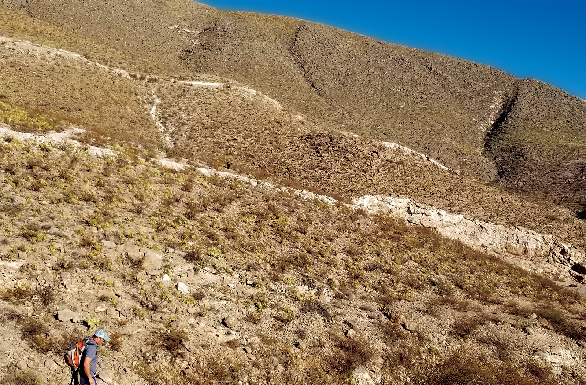
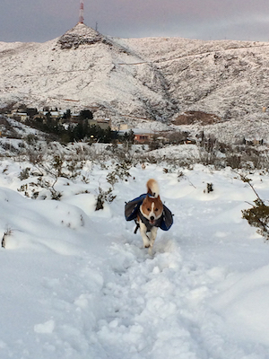

- LatLongLogic -
Research Applications in Geospatial Data Analytics, Machine Learning, and Visualizations for Field Studies.



Papers (selected)
Conferences / Workshops (selected)
(August 2025 - Current) Adjunct Geology Instructor - El Paso Community College
(May 2023 - Feb) Research Technician III - UTEP, Department of Earth and Environmental Sciences
(2020 – spring 2021) Graduate Teacher Assistant (T.A.) UTEP, Department of Earth, Environmental and Resource Sciences.
(2019 – 2018) Graduate T.A. UTEP, Department of Geological Sciences, Social Environmental Geospatial Analysis Lab
(July 2015, 2012, 2011; 2010, 2009) “Geologic Hazards”, “Intro to Earth Sciences” - UTEP; “Geology & Higher Ed.”, “Seismology”, “Volcanism” - EPCC